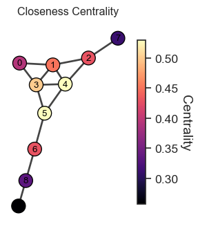
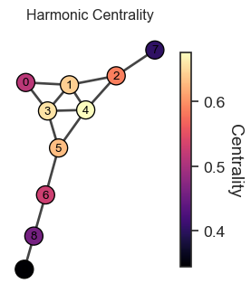
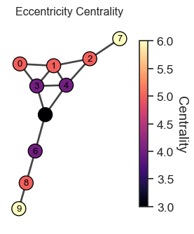
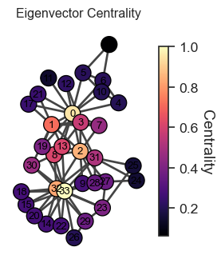

Friendship paradox check (True/False, justify briefly): In an undirected simple network, pick a node U uniformly at random; then pick one of U’s neighbors V uniformly at random (a ‘random friend’). Each node has an attribute X that is independent of its degree D. Claim: E[X(V)] > E[X(U)] always. Is the claim True or False?
Answer: False.
0.3 Shingai 🎉
In a star graph with 1 central hub connected to 10 leaf nodes, what fraction of edges must be removed to reduce network connectivity below 0.5?
Answer: 0.5 (or 50%). The star has 10 edges total. Removing 5 edges disconnects 5 leaves, leaving 6 nodes in the main component out of 11 total = 6/11 ≈ 0.545. Removing 6 edges gives 5/11 ≈ 0.45, which is below 0.5. SK: 6 edges (60%?) 🤔
0.4 Pranshu 🎉
Two networks have the same average degree and identical degree distributions. In simulation, Network A loses its giant component at a 35% node removal rate, while Network B retains it until 55%. … further analysis shows both networks have assortativity = 0. Explain what structural property most likely explains the difference in robustness and why it can produce such effects even at zero assortativity.
Answer: The key structural property is clustering (triadic closure). Network A likely has higher clustering, meaning many edges are redundant within local triangles rather than bridging distant parts of the network. This reduces the number of long-range links that maintain global connectivity, making it more vulnerable to random failures even though assortativity is zero. SK: Interesting question but curious why distance plays a role here? 🤔
0.5 Ted 🎉
The Molloy–Reed criterion kappa = ⟨<k^2 > / < k>⟩> 2 guarantees a giant component for finite n.
Answer: alse, n needs to be large.
1 Advanced Topics in Network Science
Lecture 06: Centrality Sadamori Kojaku
1.1 What to Learn 📚
What is centrality in networks? 🕸️
How to operationalize centrality? 🔢
How to find centrality in networks? 🔍
Limitations of centrality ⚠️
Keywords: degree centrality, closeness centrality, betweenness centrality, eigenvector centrality, PageRank, Katz centrality, HITS, random walk
A measure of how important/central a node is in a network
Many definitions of centrality
Let’s consider some key ideas from history
2 Example from histories
2.1 The Golden Milestone (Milliarium Aureum) 🏛️
Located in the Roman Forum
Built by Emperor Augustus (1st emperor of Rome)
Symbolized Rome as the center of the empire
“All roads lead to Rome” is a reference to the Golden Milestone
2.2 Idea 1
A central node ~ A node that is connected to other nodes by a short distance 🤔
2.3 Closeness Centrality 🏃♀️
Measure of how close a node is to all others.
Centrality of a node i, denoted by c_i, is defined as
c_i = \frac{N-1}{\sum_{j\neq i} d_{ij}}
where d_{ij} is the shortest path length from node i to node j

Figure 1: Closeness Centrality Visualization. Nodes with higher centrality (brighter colors) are closer to all other nodes on average.
2.4 Harmonic Centrality
Another popular distance-based centrality.
c_i = \sum_{j\neq i} \frac{1}{d_{ij}}
What’s the key benefit of using harmonic centrality instead of the closeness centrality, c_i = \sum_{j\neq i} \frac{N-1}{\sum_{j\neq i} d_{ij}}?
The harmonic centrality can handle disconnected networks.

Figure 2: Harmonic Centrality Visualization. Nodes with higher centrality (brighter colors) are closer to all other nodes on average.
2.5 Eccentricity Centrality
Based on farthest node
c_i = \frac{1}{\max_{j} d_{ij}}
Any conceptual difference from the cloness and harmonic centrality?

Eccentricity concerns the farthest nodes while closeness and harmonic centrality concerns the average distance. If you are interested in the worst-case scenario in transportation networks, for example, the eccentricity centrality could be more appropriate.
The eigenvectors of \mathbf{A}^T \mathbf{A} and \mathbf{A} \mathbf{A}^T are the solutions
Take the principal eigenvector of \mathbf{A} \mathbf{A}^T as the authority score and the principal eigenvector of \mathbf{A}^T \mathbf{A} as the hub score.
2.12 Limitation of Eigenvector Centrality ⚠️
Tends to concentrate importance on few well-connected nodes.
Can underemphasize importance of less connected nodes

Eigenvector Centrality Visualization.
2.13 Katz Centrality: Addressing Limitations 🛠️
Adds a base level of importance to all nodes
c_i = \beta + \lambda \sum_{j} A_{ij} c_j
\beta: base score given to all nodes
Provides more balanced centrality scores
Question: Can we solve this equation? If so, what is the solution 🤔?
2.14 PageRank 🌐
Surfers follow links or teleport to any node with probability \beta.
PageRank of node i is the long-term probability a surfer is at i.
c_i = \underbrace{\frac{\beta}{N}}_{\text{teleport}} + \underbrace{(1-\beta) \sum_j \frac{A_{ji}}{d^{\text{out}}_j} c_j}_{\text{click on a link}}
d^{\text{out}}_j: out-degree of node j
A_{ji} / d^{\text{out}}_j: Probability of moving from node j to node i
c_i: the probability that a random surfer is at node i after many steps
Question: Can we solve this equation? If so, what is the solution 🤔?
Different measures highlight various network aspects
Consider network structure and dynamics
Use centrality as a tool, not absolute truth 🧰🤔
Source Code
---format: revealjs: slide-number: true chalkboard: buttons: true preview-links: auto css: css/style.css html: code-fold: true code-tools: truehighlight-style: oblivionexecute: enabled: true echo: false---```{python}#| echo: false#| include: falseimport igraph as igimport matplotlib.pyplot as pltimport numpy as np# Create the graphedges = [(0,1), (0,3), (1,2), (1,3), (1,4), (2,4), (2,7), (3,4), (3,5), (4,5), (5,6), (6,8), (8,9)]g = ig.Graph(edges=edges, directed=False)g.vs["label"] =range(g.vcount())layout = g.layout("fr")# Plotting functiondef plot_centrality(g, scores, title, layout): fig, ax = plt.subplots(figsize=(3, 4)) cmap = plt.cm.magma# Handle cases where all scores are the same min_score, max_score = np.min(scores), np.max(scores)if min_score == max_score: normalized_scores = np.ones_like(scores)else: normalized_scores = (np.array(scores) - min_score) / (max_score - min_score) vertex_color = [cmap(s) for s in normalized_scores] ig.plot( g, target=ax, layout=layout, vertex_size=20, vertex_color=vertex_color, vertex_label_color="black", vertex_label_dist=0, vertex_label_size=10 ) ax.set_title(title, fontsize=12)# Add a colorbar sm = plt.cm.ScalarMappable(cmap=cmap, norm=plt.Normalize(vmin=min_score, vmax=max_score)) sm.set_array([]) cbar = plt.colorbar(sm, ax=ax, shrink=0.8) cbar.set_label("Centrality", rotation=270, labelpad=15)#return fig```---## Check list- [ ] Microphone turned on- [ ] Zoom room open- [ ] Recording on- [ ] Mouse cursor visible- [ ] Sound Volume on## Amahury 🎉Friendship paradox check (True/False, justify briefly): In an undirected simple network, pick a node U uniformly at random; then pick one of U's neighbors V uniformly at random (a 'random friend'). Each node has an attribute X that is independent of its degree D. Claim: E[X(V)] > E[X(U)] always. Is the claim True or False?::: {.incremental}- **Answer**: False.:::## Shingai 🎉In a star graph with 1 central hub connected to 10 leaf nodes, what fraction of edges must be removed to reduce network connectivity below 0.5?::: {.incremental}- **Answer**: 0.5 (or 50%). The star has 10 edges total. Removing 5 edges disconnects 5 leaves, leaving 6 nodes in the main component out of 11 total = 6/11 ≈ 0.545. Removing 6 edges gives 5/11 ≈ 0.45, which is below 0.5.[SK: 6 edges (60%?)]{.red-text} 🤔:::## Pranshu 🎉Two networks have the same average degree and identical degree distributions. In simulation, Network A loses its giant component at a 35% node removal rate, while Network B retains it until 55%. ... further analysis shows both networks have assortativity = 0. Explain what structural property most likely explains the difference in robustness and why it can produce such effects even at zero assortativity.::: {.incremental}- **Answer**: The key structural property is clustering (triadic closure). Network A likely has higher clustering, meaning many edges are redundant within local triangles rather than bridging distant parts of the network. This reduces the number of long-range links that maintain global connectivity, making it more vulnerable to random failures even though assortativity is zero. [SK: Interesting question but curious why distance plays a role here?]{.red-text} 🤔:::## Ted 🎉The Molloy–Reed criterion kappa = ⟨<k^2 > / < k>⟩> 2 guarantees a giant component for finite n.::: {.incremental}- **Answer**: alse, n needs to be large.:::# Advanced Topics in Network ScienceLecture 06: CentralitySadamori Kojaku## What to Learn 📚- What is centrality in networks? 🕸️- How to operationalize centrality? 🔢- How to find centrality in networks? 🔍- Limitations of centrality ⚠️**Keywords**: degree centrality, closeness centrality, betweenness centrality, eigenvector centrality, PageRank, Katz centrality, HITS, random walk## [✍️ Pen and paper for centralities](https://skojaku.github.io/adv-net-sci/m06-centrality/pen-and-paper.html)## What is centrality?- A measure of how important/central a node is in a network- Many definitions of centrality- Let's consider some key ideas from history# Example from histories## The Golden Milestone (Milliarium Aureum) 🏛️::: {.columns}::: {.column width="50%"}- Located in the Roman Forum- Built by Emperor Augustus (1st emperor of Rome)- Symbolized Rome as the center of the empire- "All roads lead to Rome" is a reference to the Golden Milestone:::::: {.column width="50%"}::::::## Idea 1::: {.center-xy .large-text}A central node ~ A node that is connected to other nodes by a short distance 🤔:::## Closeness Centrality 🏃♀️::: {.columns}::: {.column width="50%"}- Measure of how close a node is to all others.- Centrality of a node $i$, denoted by $c_i$, is defined as$$c_i = \frac{N-1}{\sum_{j\neq i} d_{ij}}$$where $d_{ij}$ is the shortest path length from node $i$ to node $j$:::::: {.column width="50%"}```{python}#| echo: false#| fig-cap: "Closeness Centrality Visualization. Nodes with higher centrality (brighter colors) are closer to all other nodes on average."#| label: fig-closenessscores = g.closeness()plot_centrality(g, scores, "Closeness Centrality", layout)```::::::## Harmonic Centrality::: {columns}::: {.column width="50%"}Another popular distance-based centrality.$$c_i = \sum_{j\neq i} \frac{1}{d_{ij}}$$What's the key benefit of using harmonic centrality instead of the closeness centrality, $c_i = \sum_{j\neq i} \frac{N-1}{\sum_{j\neq i} d_{ij}}$?::: {.incremental}- The harmonic centrality can handle disconnected networks.::::::::: {.column width="50%"}```{python}#| echo: false#| fig-cap: "Harmonic Centrality Visualization. Nodes with higher centrality (brighter colors) are closer to all other nodes on average."#| label: fig-harmonicscores = g.harmonic_centrality()plot_centrality(g, scores, "Harmonic Centrality", layout)```::::::## Eccentricity Centrality::: {.columns}::: {.column width="50%"}Based on farthest node$$c_i = \frac{1}{\max_{j} d_{ij}}$$Any conceptual difference from the cloness and harmonic centrality?:::::: {.column width="50%"}```{python}#| echo: falsescores = g.eccentricity()plot_centrality(g, scores, "Eccentricity Centrality", layout)```::::::::: {.incremental}- Eccentricity concerns the farthest nodes while closeness and harmonic centrality concerns the average distance. If you are interested in the worst-case scenario in transportation networks, for example, the eccentricity centrality could be more appropriate.:::---### Betweenness Centrality 🌉::: {.columns}::: {.column width="60%"}Based on shortest paths$$c_i = \sum_{j < k} \frac{\sigma_{jk}(i)}{\sigma_{jk}}$$ - $\sigma_{jk}(i)$: number passing through node i - $\sigma_{jk}$: number of shortest paths between j and k - If $\sigma_{jk} = 1$ for all pairs (i.e., all pairs are connected by a single shortest path), $c_i$ is the count of shortest paths through node $i$.:::::: {.column width="40%"}```{python}#| echo: false#| fig-cap: "Betweenness Centrality Visualization."#| label: fig-betweennessscores = g.betweenness()plot_centrality(g, scores, "Betweenness Centrality", layout)```::::::## "A man is known by the company he keeps" 🤝::: {.columns}::: {.column width="60%"}- Ancient Greek wisdom (Aesop)- How do we define centrality based on the idea?:::::: {.column width="40%"}::::::## Idea 2::: {.center-xy .large-text}A node is important if it is connected to important nodes:::## Eigenvector Centrality 🌟::: {.columns}::: {.column width="60%"}**Key idea**: Important nodes are connected to other important nodes.An importance $c_i$ of node $i$ is proportional to those of its neighbors.$$c_i = \lambda \sum_{j} A_{ij} c_j$$or in matrix form$$\mathbf{c} = \lambda \mathbf{A} \mathbf{c}$$:::::: {.column width="40%"}```{python}#| echo: false#| fig-cap: "Eigenvector Centrality Visualization."#| label: fig-eigenvectorscores = g.eigenvector_centrality()plot_centrality(g, scores, "Eigenvector Centrality", layout)```::::::- **Question**: Can we solve this equation? If so, what is the solution 🤔?## Answer::: {.columns}::: {.column width="60%"}$\mathbf{c} = \lambda \mathbf{A} \mathbf{c}$ is an eigenvector equation. So $\mathbf{c}$ is an eigenvector of $\mathbf{A}$ with eigenvalue $\lambda$.::: {.incremental}- But here is a problem. The solution is not unique. Any eigenvector can be a solution. Which one to choose?- We want the importance score to be all positive (or all negatives, since the sign is indeterminate).- There is always one such eigenvector, the principal eigenvector (Peron-Frobenius theorem)::::::::: {.column width="40%"}```{python}#| echo: falseimport seaborn as snsA = g.get_adjacency()sns.set_style('white')sns.set(font_scale=1.2)sns.set_style('ticks')fig, axes = plt.subplots(2, 1, figsize=(7,10))eigenvalues, eigenvectors = np.linalg.eig(A)ax = axes[0]ax = sns.heatmap(eigenvectors, center =0, cmap ="coolwarm", ax = ax)ax.set_title("Eigenvector Centrality Heatmap")ax.set_xlabel("Eigenvector")ax.set_ylabel("Node")ax = axes[1]sns.lineplot(x = np.arange(len(eigenvalues)), y = eigenvalues, ax = ax, marker ="o", linewidth =2, markersize =10)ax.set_title("Eigenvalues")ax.set_xlabel("Eigenvalue")ax.set_ylabel("Eigenvalue")sns.despine(ax = ax)fig = fig```::::::## HITS Centrality 🎯::: {.columns}::: {.column width="60%"}Introduces two kinds of importance scores.::: {.incremental}- **Hub**: Connected to many authorities - Hub score: $x_i = \lambda_x \sum_j A_{ji} y_j$ - $A_{ij} = 1$ or $0$ if there is a directed edge from $i$ to $j$ or not- **Authority**: Connected from many hubs - Authority score: $y_i = \lambda_y \sum_j A_{ij} x_j$- Matrix form: $\mathbf{x} = \lambda_x \mathbf{A}^T \mathbf{y},\quad\mathbf{y} = \lambda_y \mathbf{A} \mathbf{x}$- **Question**: What are the solution to this equation?::::::::: {.column width="40%"}```{python}#| echo: falseedges = [ (3,0), (3,1), (3,2), # Hub 3 points to authorities (4,0), (4,1), (4,2), # Hub 4 points to authorities (5,0), (5,1), (5,2), # Hub 5 points to authorities (6,3), (6,4), (6,5), # Authority 6 points to hubs (7,3), (7,4), (7,5), # Authority 7 points to hubs (8,3), (8,4), (8,5), # Authority 8 points to hubs]g_directed = ig.Graph(edges=edges, directed=True)g_directed.vs["label"] =range(g_directed.vcount())# Calculate HITS centrality using igraph's APIhub_scores = np.array(g_directed.hub_score())authority_scores = np.array(g_directed.authority_score())# Create layout (same for both plots)layout_directed = g_directed.layout("circle")# Create figure with 2 rowsfig, axes = plt.subplots(2, 1, figsize=(4, 6))# Plot 1: Hub Scores (red gradient)hub_colors = []hub_sizes = []cmap_red = sns.color_palette("cividis", as_cmap=True)for i inrange(g_directed.vcount()): h = hub_scores[i] intensity =0.3+0.7* h # Range from 0.3 to 1.0 hub_colors.append(cmap_red(intensity)) hub_sizes.append(20+30* h)ig.plot( g_directed, target=axes[0], layout=layout_directed, vertex_size=hub_sizes, vertex_color=hub_colors, vertex_frame_width=0.5, vertex_frame_color="black", vertex_label=g_directed.vs["label"], vertex_label_color="black", vertex_label_size=10, edge_width=0.5, edge_color="#666666", autocurve=True, margin=40)axes[0].set_title("Hub Scores", fontsize=12, fontweight='bold')# Plot 2: Authority Scores (blue gradient)authority_colors = []authority_sizes = []cmap_blue = sns.color_palette("cividis", as_cmap=True)for i inrange(g_directed.vcount()): a = authority_scores[i] intensity =0.3+0.7* a # Range from 0.3 to 1.0 authority_colors.append(cmap_blue(intensity)) authority_sizes.append(20+30* a)ig.plot( g_directed, target=axes[1], layout=layout_directed, vertex_size=authority_sizes, vertex_color=authority_colors, vertex_frame_width=0.5, vertex_frame_color="black", vertex_label=g_directed.vs["label"], vertex_label_color="black", vertex_label_size=10, edge_width=0.5, edge_color="#666666", autocurve=True, margin=40)axes[1].set_title("Authority Scores", fontsize=12, fontweight='bold')plt.tight_layout()```::::::## Answer- The eigenvectors of $\mathbf{A}^T \mathbf{A}$ and $\mathbf{A} \mathbf{A}^T$ are the solutions- Take the principal eigenvector of $\mathbf{A} \mathbf{A}^T$ as the authority score and the principal eigenvector of $\mathbf{A}^T \mathbf{A}$ as the hub score.## Limitation of Eigenvector Centrality ⚠️::: {.columns}::: {.column width="60%"}- Tends to concentrate importance on few well-connected nodes.- Can underemphasize importance of less connected nodes:::::: {.column width="40%"}```{python}#| echo: false#| fig-cap: "Eigenvector Centrality Visualization."# Create two cliques of size 5 each, connected by a single edgeg_clique = ig.Graph.Famous("Zachary")g_clique.vs["label"] =range(g_clique.vcount())layout_clique = g_clique.layout("kk")scores = g_clique.eigenvector_centrality()plot_centrality(g_clique, scores, "Eigenvector Centrality", layout_clique)```::::::## Katz Centrality: Addressing Limitations 🛠️- Adds a base level of importance to all nodes$$c_i = \beta + \lambda \sum_{j} A_{ij} c_j$$- $\beta$: base score given to all nodes- Provides more balanced centrality scores- **Question**: Can we solve this equation? If so, what is the solution 🤔?## PageRank 🌐- Surfers follow links or [teleport]{.red-text} to any node with probability $\beta$.- PageRank of node $i$ is the long-term probability a surfer is at $i$.$$c_i = \underbrace{\frac{\beta}{N}}_{\text{teleport}} + \underbrace{(1-\beta) \sum_j \frac{A_{ji}}{d^{\text{out}}_j} c_j}_{\text{click on a link}}$$- $d^{\text{out}}_j$: out-degree of node j- $A_{ji} / d^{\text{out}}_j$: Probability of moving from node $j$ to node $i$- $c_i$: the probability that a random surfer is at node $i$ after many steps- **Question**: Can we solve this equation? If so, what is the solution 🤔?## Degree-based Centrality 🔢- Simplest form of centrality- Count of edges connected to a node- $c_i = d_i = \sum_{j} A_{ij}$# Hands-on Coding Exercise 🎓## Centrality Computation in Python 🐍```python# Degree centralityg.degree()# Closeness centralityg.closeness()# Betweenness centralityg.betweenness()# Eigenvector centralityg.eigenvector_centrality()# Hitsg.hub_score()g.authority_score()# PageRankg.personalized_pagerank()```## Key Takeaways 🗝️- Centrality ≠ Universal Importance- Context is crucial for interpretation- Different measures highlight various network aspects- Consider network structure and dynamics- Use centrality as a tool, not absolute truth 🧰🤔